🛫 가는 편 — 진에어 LJ43
🛬 오는 편 — 진에어 LJ44
🏨 숙소 ① — 알로나 파위칸 (도착 첫날)
Alona Pawikan · 아고다 예약 확정 (결제 완료)
| 객실 | 방갈로(Bungalow) 1개 · 1박 |
|---|---|
| 체크인 | 7/18 (토) 자 예약 — 실제 도착 7/19 새벽 2시경 |
| 체크아웃 | 7/19 (일) 12:00 |
| 주소 | Ester Lim Drive, Panglao, Bohol 6340 |
| 연락처 | +63 919 414 0619 · alona_pawikan@yahoo.com |
| 예약번호 | 173313**** (아고다 메일 참조) |
| 편의 | 레이트 체크인 · 무료 Wi-Fi · 생수 · 커피&차 |
🏖️ 숙소 ② — 헤난 리조트 알로나 비치 (메인)
Henann Resort Alona Beach · 아고다 예약 확정 (결제 완료) · 알로나 비치 바로 앞 대형 리조트
| 객실 | 프리미어룸(Premier Room) 1개 · 4박 · 성인 3명 |
|---|---|
| 체크인 | 7/19 (일) 15:00 |
| 체크아웃 | 7/23 (목) 11:00 |
| 주소 | Alona Beach Rd, Panglao, Bohol 6340 |
| 연락처 | +63 917 773 8148 · henannalonamanila@gmail.com |
| 예약번호 | 174139**** (아고다 메일 참조) |
| 포함 | 조식 포함 · 생수 · 커피&차 · 무료 Wi-Fi · 금연룸 요청 완료 |
🅰️ 위시리스트 전부 소화 (새벽 기상 2회) · 🅱️ 육상투어·고래상어를 빼고 푹 쉬는 버전 (새벽 기상 1회) — 현지 컨디션 보고 골라도 OK! 발리카삭만 고정하고 고래상어·반딧불은 현지 날씨 보고 결정하는 절충 운용도 좋아요 (예약 시 전날 취소 가능 여부 확인).
- 15:00집 출발여권·이트래블 QR·바우처 최종 확인✅ 최종 체크리스트
- 17:00인천공항 도착, 체크인진에어 카운터 · 위탁수하물 부치기
- 18:30출국심사 후 저녁 식사보홀 노선은 무료 기내식 미제공 — 공항에서 든든하게 먹고 타요!
- 21:00LJ43 출발 ✈️ (비행 4시간 45분)기내식 없는 노선이니 간식 챙기기 · 기내에서 눈 붙이기 (도착이 새벽!)✈️ 항공편 정보
- 00:45보홀 팡라오공항 도착이트래블 QR 제시 → 입국심사 → 수하물🛂 입국 절차
- 02:00알로나 파위칸 체크인, 취침공항 픽업 or 그랩/택시 (공항에서 10~15분)🏨 숙소 정보
- 10:00늦잠 후 브런치푹 자기! 오후부터 진짜 시작
- 12:00파위칸 체크아웃 → 헤난에 짐 맡기기같은 팡라오, 차로 5~10분
- 13:30히낙다난 동굴 🕳️다우이스, 차 15~20분 · 동굴 속 천연 수영장 (수영 가능, 입장료 별도)🕳️ 상세·가는 법
- 15:30헤난 리조트 체크인🏨 숙소 정보
- 16:30알로나 비치 산책 & 수영리조트가 비치 바로 앞! 환전·유심 확인, 동네 파악🏖️ 알로나 비치
- 18:30저녁: 알로나비치 맛집레드크랩 or 씨푸드 (맛집 탭 참고) · 내일 새벽 6시 호핑 픽업 — 일찍 자기!🍽️ 맛집 목록
- 06:00기상, 숙소 픽업보자무싸 써니 오션 호핑 (조인) · 만족도 최고 투어라 앞쪽 날짜에 배치 — 기상 취소 시 7/21로 순연🐢 투어 상세·예약
- 오전발리카삭 바다거북 스노클링바다거북 · 열대어 · 산호 군락 / 고프로 촬영 서비스
- 점심방카 위 점심 식사투어 포함
- ~14:00버진아일랜드 → 복귀썰물 때 드러나는 모래섬
- 16:00마사지 1시간 & 휴식호핑 후 마사지가 국룰!💆 스파 정보
- 18:30저녁 식사🍽️ 맛집 목록
- 05:30픽업 → 릴라(Lila)로 이동알로나에서 차 약 1시간 · 보자무싸 예약🦈 투어 상세·예약
- 오전고래상어 스노클링세계 최대 물고기와 수영! 물속 체험 약 30분
- 10:30복귀 → 리조트 수영장 & 낮잠새벽 기상 보충, 오후는 통으로 휴식
- 16:00기념품 쇼핑드라이망고 · 칼라만시 제품 등
- 17:30아바탄강 반딧불투어 출발크리스마스트리 같은 반딧불 군락 (석식 포함 여부 확인 · 모기기피제!) · 비 조금이면 진행, 번개·강한 비면 취소✨ 투어 상세·예약
- 21:00숙소 복귀
- 09:00조식 든든히 & 짐 정리
- 11:00헤난 체크아웃 & 짐 보관레이트 체크아웃 가능하면 최대한 활용🏨 숙소 정보
- 12:00점심 & 알로나 거리 구경🍽️ 맛집 목록
- 14:00보홀 비팜 (카페·기념품)다우이스, 차 20분 · 꿀 아이스크림 & 유기농 기념품 — 마지막 날 드라이 코스로 딱🍯 상세
- 16:30마사지 90분 & 샤워비행 전 개운하게 — 샤워 가능한 스파로💆 스파 정보
- 19:00저녁 식사마지막 만찬은 근사하게!
- 22:30공항으로 이동그랩/픽업 예약 필수 (심야)🚕 이동 팁
- 01:45LJ44 출발 → 07:25 인천 도착7/24 (금) 아침 귀국 🏠✈️ 귀국편 정보
🅱️ 여유 일정은 이렇게 달라요
빠지는 것: 육상투어 풀코스(초콜릿힐·ATV·안경원숭이·로복강)와 고래상어(새벽 5:30 출발). 대신 새벽 기상이 호핑 하루뿐이고, 리조트·비치에서 쉬는 시간이 확 늘어요. 바다거북·반딧불·동굴은 그대로, 정어리떼(나팔링)는 마지막 날 오전 옵션! 호핑이 날씨로 취소돼도 7/22이 통째로 비어 있어 순연이 쉬워요. 현지에서 컨디션 좋으면 빠진 투어를 하루 전 보자무싸에 추가 문의하는 것도 가능해요.
- 오전조식 후 리조트 수영장 느긋하게
- 13:30히낙다난 동굴 🕳️다우이스, 차 15~20분 · 동굴 속 천연 수영장🕳️ 상세·가는 법
- 15:30두말루안 비치팡라오에서 물빛 제일 예쁜 비치 (차 15분)🌊 상세
- 18:30저녁 식사내일 새벽 출발이니 일찍 자기!🍽️ 맛집 목록
- 06:00기상, 숙소 픽업보자무싸 써니 오션 호핑 (조인) — 유일한 새벽 기상! 기상 악화로 취소되면 7/22로 순연🐢 투어 상세·예약
- 오전발리카삭 바다거북 스노클링바다거북 · 열대어 · 산호 군락 / 고프로 촬영 서비스
- 점심방카 위 점심 식사투어 포함
- ~14:00버진아일랜드 → 복귀썰물 때 드러나는 모래섬
- 16:00마사지 1시간 & 휴식호핑 후 마사지가 국룰!💆 스파 정보
- 18:30저녁 식사🍽️ 맛집 목록
- 오전늦잠 + 리조트 수영장/비치밀린 피로 여기서 다 풀기
- 오후카페 & 기념품 쇼핑드라이망고 · 칼라만시 제품 등
- 17:30아바탄강 반딧불투어 출발크리스마스트리 같은 반딧불 군락 (석식 포함 여부 확인 · 모기기피제!) · 비 조금이면 진행, 번개·강한 비면 취소✨ 투어 상세·예약
- 21:00숙소 복귀
- 09:00조식 든든히 & 짐 정리
- 11:00헤난 체크아웃 & 짐 보관레이트 체크아웃 가능하면 최대한 활용🏨 숙소 정보
- 12:00점심 & 알로나 거리 구경🍽️ 맛집 목록
- 14:00보홀 비팜 (카페·기념품)다우이스, 차 20분 · 꿀 아이스크림 & 유기농 기념품 — 마지막 날 드라이 코스로 딱🍯 상세
- 16:30마사지 90분 & 샤워비행 전 개운하게 — 샤워 가능한 스파로💆 스파 정보
- 19:00저녁 식사마지막 만찬은 근사하게!
- 22:30공항으로 이동그랩/픽업 예약 필수 (심야)🚕 이동 팁
- 01:45LJ44 출발 → 07:25 인천 도착7/24 (금) 아침 귀국 🏠✈️ 귀국편 정보
🌦️ 우천 시 비상 운영안
7월은 우기지만 하루종일 오는 비는 드물고 오후 스콜 위주. 만족도가 가장 높은 발리카삭을 7/20에 앞배치해서 백업일을 확보했어요.
발리카삭(7/20)이 기상으로 취소되면: 발리카삭을 7/21로 옮기고 → 육상투어를 7/22로 → 고래상어는 과감히 포기 (발리카삭이 만족도·안정성 모두 우위). 반딧불은 체력 되면 7/22 저녁 유지.
예약할 때 이렇게 물어보세요: "날씨나 해상 상황으로 취소되면 다음 날로 변경 가능한가요? 환불/변경 규정, 픽업 시간, 포함사항(점심·장비·환경세)도 알려주세요." — 가격보다 이 조건이 더 중요해요!
🌦️ 여행 기간 예보 — 기상모델 3종 비교
알로나 비치(헤난 리조트) 기준 · 페이지를 열 때마다 최신 예보로 자동 갱신돼요.
🔄 세 모델 예보를 불러오는 중…
🔗 3사 사이트에서 직접 확인
AccuWeather와 웨더채널(weather.com)은 자체 예보를 무료 API로 공개하지 않아 표에는 담을 수 없어요. 대신 아래 버튼으로 팡라오 예보 페이지가 바로 열려요. Windy가 기본으로 보여주는 모델(ECMWF·GFS)은 위 표에 실시간으로 들어가 있어요.
📖 예보 읽는 법
· 날짜마다 모델 3개(ECMWF·GFS·ICON)의 칸이 나란히: 하늘 상태 / 최고°/최저° / 예상 강수량
· 날짜 옆 💧는 강수확률 (GFS 기준)
· 7월 보홀 비는 대부분 오후 스콜 — 강수량이 찍혀 있어도 하루 종일 오는 비는 드물어요
· 세 모델의 예보가 서로 다르면 그만큼 불확실하다는 뜻 — 해상 투어 전날 밤엔 업체(보자무싸)와 진행 여부를 꼭 확인!
🗺️ 일자별 이동 동선 (플랜 A 기준)
아래로 내리면 날짜별 지도가 전부 나와요. 거리·시간은 도로 기준 대략값 · 🚤 표시는 방카(보트) 이동 · 휴대폰에서 지도는 두 손가락으로 확대·이동할 수 있어요 (한 손가락은 페이지 스크롤).
🔄 지도를 준비하는 중…
🚨 예약, 오늘 안에 이렇게! (출발 D-1)
7월 성수기엔 인기 투어부터 마감돼요. 특히 발리카삭은 일일 입장 인원 제한이 있어 가장 먼저 확정!
- 보자무싸 카페 → 카톡 상담으로 4개 투어(7/20 호핑 · 7/21 육상+ATV · 7/22 고래상어 · 7/22 반딧불)를 한 번에 문의 — 한 업체로 묶으면 픽업 시간 조율이 쉽고 묶음 할인 여지도 있어요. 우선순위: ① 새벽 공항픽업 ② 호핑 ③ 육상 ④ 고래상어·반딧불
- 마감된 투어는 마이리얼트립·KKday·클룩에서 즉시 결제로 대체 (모바일 바우처, 환불 규정 명확)
- 그래도 못 잡았으면 도착 후 헤난 로비·알로나 거리 투어데스크에서 전날 예약 — 단, 성수기라 만석 위험
| 채널 | 장점 | 예약 방법 |
|---|---|---|
| 보자무싸 한인 현지 여행사 | 조인 가성비 · 한국어 상담 · 후기 많음 | 네이버 카페 가입 → 예약 양식 작성 → 카톡 확정 |
| 마이리얼트립 KKday · 클룩 | 즉시 확정 · 카드 결제 · 취소 규정 명시 | 앱에서 날짜 선택·결제 → 바우처 → 메신저로 픽업 안내 |
| 현장 데스크 | 남은 자리 흥정 가능 | 알로나 거리·리조트 로비에서 전날 예약 |
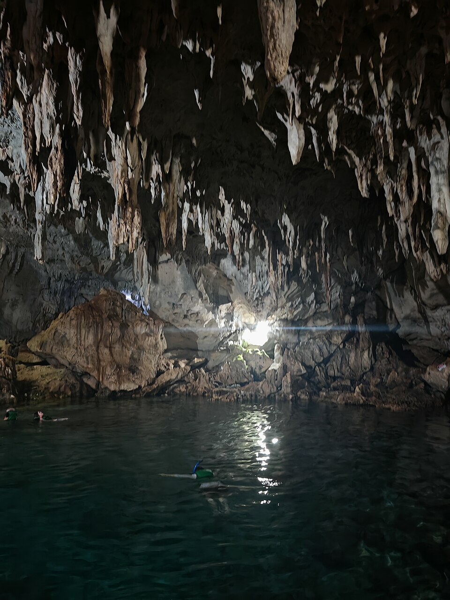
DAY 2 · 7/19 (일) 오후🕳️ 히낙다난 동굴
🅰️🅱️ 공통예약 불필요수영 가능종유석이 매달린 석회동굴 아래 에메랄드빛 천연 수영장. 뚫린 천장으로 햇살이 쏟아지는 인생샷 스팟이에요.
| 위치 | 다우이스 — 알로나에서 차 15~20분 |
|---|---|
| 요금 | 입장 50 + 수영 75 = 125페소/인 (≈3,200원) · 주차 20페소 · 현금 |
| 시간 | 08:00~17:00 · 관람만 30분, 수영까지 1시간 |
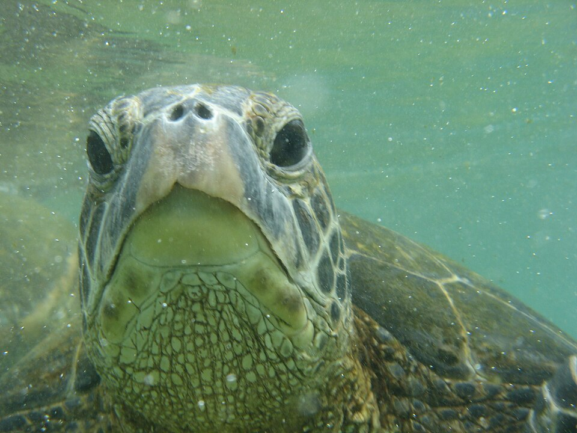
DAY 3 · 7/20 (월) 06:00 픽업🐢 발리카삭 호핑투어 (하이라이트!)
🅰️ 7/20🅱️ 7/21보자무싸 써니 오션강력추천바다거북·열대어·산호 군락 스노클링 후 썰물에만 드러나는 버진아일랜드 모래섬까지. 우리 여행의 메인 이벤트! 만족도 최고 투어라 앞쪽 날짜에 배치 — 기상 취소 시 다음 날로 순연.
| 일정 | 06:00 픽업 → 발리카삭 스노클링 → 방카 위 점심 → 버진아일랜드 → ~14:00 복귀 |
|---|---|
| 가격 | 조인 약 8.3만원/인 — 점심·장비·픽드랍·전담 스탭 포함 |
| 촬영 | 스탭 고프로 촬영 — SD카드 구매 시 원본 전체 제공 |
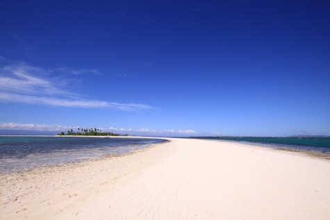
- 가장 먼저 예약할 투어! 발리카삭은 일일 입장 인원 제한이 있어 오늘 확정이 안전. 보자무싸 카페 가입 → 예약글 양식 작성 → 카톡으로 날짜·인원·숙소(헤난) 전달 → 확정.
- 꼭 물어보기: "기상·해상 상황으로 취소되면 7/21로 변경 가능한가요? 환불 규정도 알려주세요" — 가격보다 이 조건이 중요!
- 대안 — KKday 고프로 포함 상품 / 마이리얼트립 실속형: 카드 결제 즉시 확정이 필요할 때.
- 팁: 픽업 30분 전 멀미약 복용(방카!), 래시가드·리프세이프 선크림, 전날 픽업 시간 재확인 문자.
🚐 DAY 4 · 육상투어 풀코스 + ATV — 7/21 (화)
🅰️ 플랜A08:30 픽업 → 17:30 복귀총 이동 ~150km아래 네 곳(안경원숭이 → 로복강 → 초콜릿힐+ATV → 맨메이드 포레스트)을 하루에 도는 코스예요.
| 가격 | 조인 5~6만원/인 · 단독 밴은 팀당 2,500~3,500페소 + 입장료 별도 |
|---|---|
| 현장 결제 입장료 | 초콜릿힐 100페소 · 로복강 런치크루즈 850페소 안팎 · 안경원숭이 100~150페소 · ATV 900~1,100페소/대 |
- 1순위 — 보자무싸 조인: 카톡으로 “ATV 포함 여부”와 “로복강 점심 포함 여부”를 꼭 확인하고 예약. 호핑과 같은 업체라 픽업 조율이 편해요.
- 2순위 — 몽키트래블/마이리얼트립 단독 밴: 가족 3인이 원하는 순서로 도는 프라이빗 투어. 입장료는 대부분 현장 결제.
- 준비물: ATV에서 흙탕물이 튀어요 — 여벌 옷 필수, 운동화, 흙먼지용 마스크, 입장료 낼 현금.
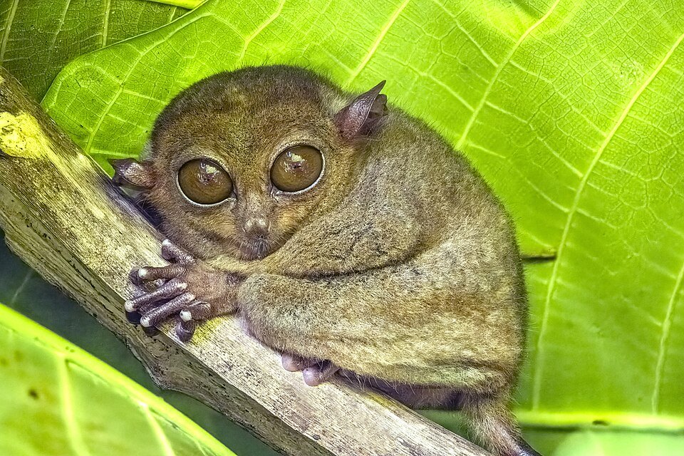
DAY 4 오전🐒 안경원숭이(타르시어) 보호구역
🅰️ 육상투어 코스손바닥만 한 세계 최소 영장류. 야행성이라 낮엔 나뭇가지에서 꾸벅꾸벅 졸아요 — 가이드 따라 조용히 관찰!
| 팁 | 플래시·셀카봉·큰 소리 금지 (스트레스에 매우 약한 동물), 만지기 금지 · 관람 30~40분 |
|---|
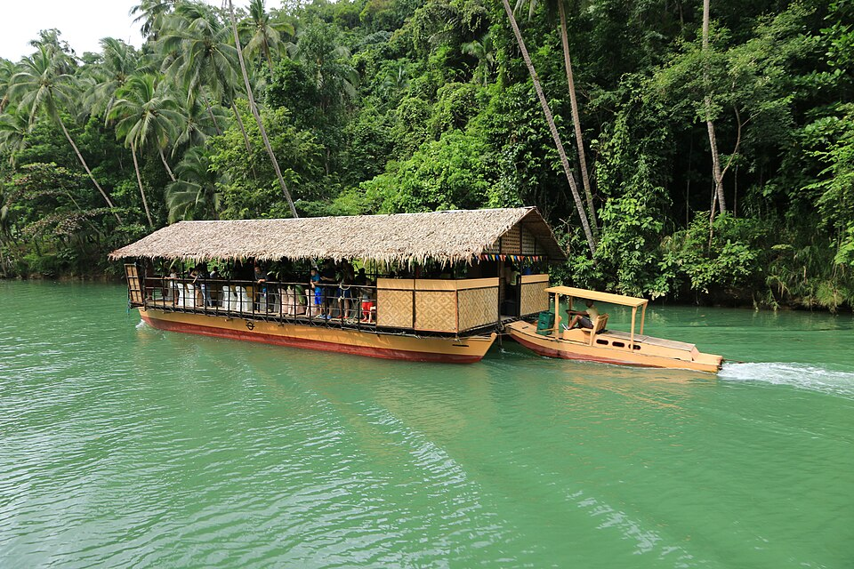
DAY 4 점심🛶 로복강 런치크루즈
🅰️ 육상투어 코스뗏목 레스토랑을 타고 야자수 정글 강을 미끄러지며 필리핀 가정식 뷔페 + 라이브 음악. 약 1시간.
| 요금 | 크루즈+뷔페 850페소 안팎/인 (≈21,000원) — 투어 포함 여부 확인 |
|---|
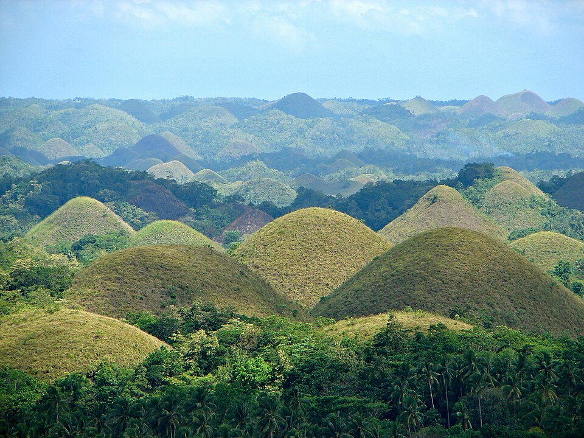
DAY 4 오후🍫 초콜릿힐 전망대 + ATV
🅰️ 육상투어 코스딸 최애 예감봉긋한 언덕 1,200여 개가 지평선까지! 전망대는 계단 214개를 올라요. ATV를 타고 언덕 사이 흙길을 달리는 게 하이라이트.
| 요금 | 전망대 100페소/인 · ATV 900~1,100페소/대 (30분~1시간, 현장 결제) |
|---|---|
| 팁 | 미성년자는 2인승(보호자 운전) 가능 여부를 예약 때 확인 · 우천 뒤엔 진흙 튐 — 여벌 옷! |
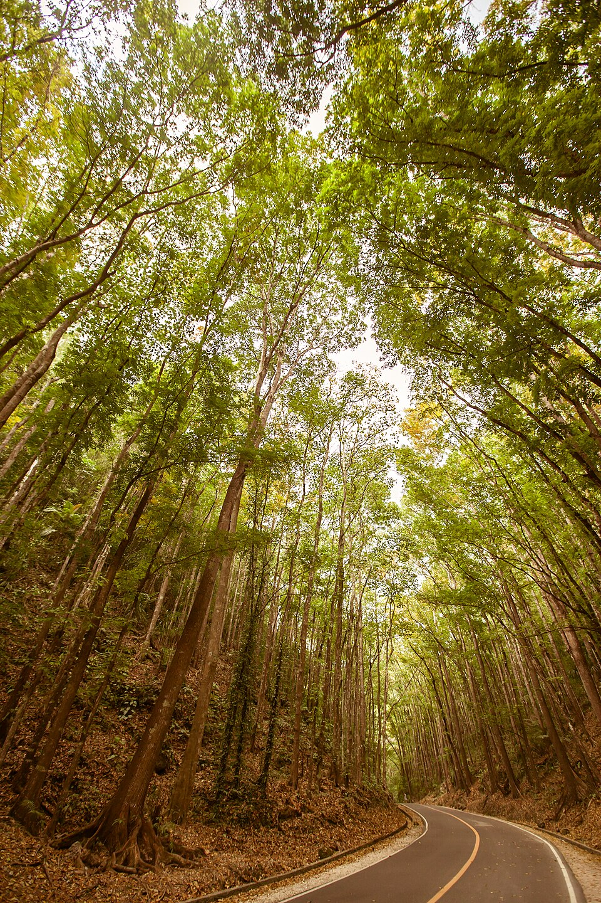
DAY 4 귀갓길🌳 맨메이드 포레스트
🅰️ 육상투어 코스무료도로 양쪽을 터널처럼 뒤덮은 마호가니 인공숲 — 보홀 대표 인생샷 명소. 차 세우고 10~15분 사진 타임.
| 팁 | 찻길 위에서 찍는 거라 차량 조심! 이끼 낀 갓길 미끄럼 주의 |
|---|
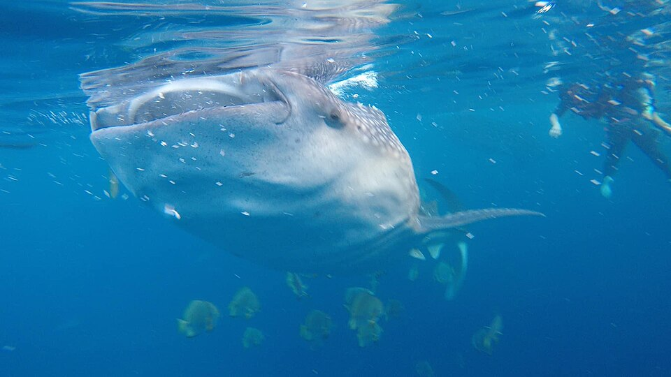
DAY 5 · 7/22 (수) 05:30 픽업🦈 릴라 고래상어 스노클링
🅰️ 플랜A새벽 출발세계에서 가장 큰 물고기 옆에서 수영! 세부 오슬롭까지 안 가고 보홀 릴라에서 만나는 코스예요. 물속 체험 약 30분.
| 일정 | 05:30 픽업 → 릴라(차 1시간) → 스노클링 30분 → 10:30 복귀 |
|---|---|
| 가격 | 조인 5만원 안팎/인 — 픽드랍·입장료·장비 포함 |
| 규칙 | 선크림 바르고 입수 금지(래시가드로 커버) · 플래시 금지 · 4~5m 거리 유지 · 만지기 금지 |
- 1순위 — 보자무싸에 반딧불과 세트로 문의: 같은 날(7/22) 새벽+저녁이라 한 업체로 묶으면 픽업 동선이 깔끔해요.
- 대안 — 마이리얼트립 “릴라 고래상어”: 조인/단독·수중촬영 옵션 상품이 다양하고, 전날 오전 9시 전 취소 시 100% 환불 상품도 있어요 (규정 확인).
- 팁: 멀미약, 수건, 갈아입을 옷. 복귀 후 리조트에서 낮잠으로 새벽 기상 보충!
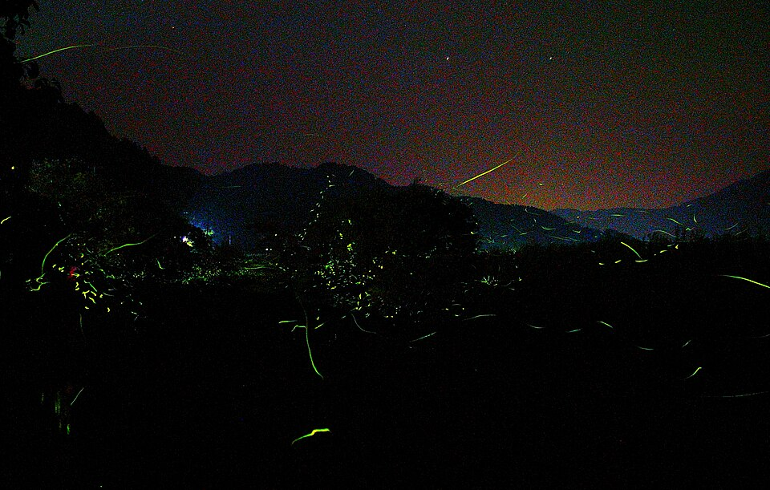
DAY 5 · 7/22 (수) 17:30 출발✨ 아바탄강 반딧불투어
🅰️🅱️ 공통저녁 투어방카를 타고 맹그로브 강을 거슬러 올라가면 나무 한 그루가 통째로 크리스마스트리처럼 반짝여요.
| 일정 | 17:30 픽업 → 아바탄강(차 50분) → 보트 반딧불 감상 → 21:00 복귀 |
|---|---|
| 가격 | 조인 2.8~4만원/인 · 단독 4.3~7.6만원/인 (인원수에 따라) |
| 준비물 | 모기기피제 필수 · 긴팔·긴바지 · 어두울수록 잘 보여요 |
- 1순위 — 고래상어와 같은 업체(보자무싸)로 묶어 예약 — 같은 날이라 픽업 시간 조율이 한 번에 끝나요.
- 대안 — 마이리얼트립 조인 상품(2.8만원대~): 석식 포함 여부가 상품마다 달라요 — 미포함이면 출발 전 이른 저녁!
- 알뜰: 현지 직접 예약 시 500~600페소+왕복 차량이지만, 밤 이동이라 가족 여행은 픽드랍 포함 상품 추천.
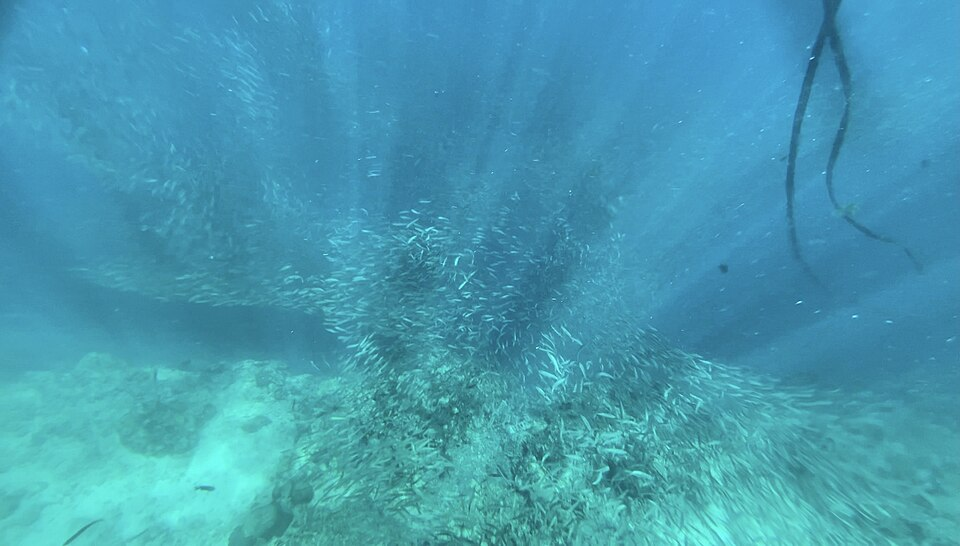
DAY 6 · 7/23 (목) 오전 옵션🐟 나팔링 정어리떼 스노클링 (옵션)
🅰️🅱️ 오전 옵션컨디션·날씨 좋을 때만절벽 아래로 들어가면 수만 마리 정어리가 머리 위에서 은빛 소용돌이를 만들어요. 구명조끼 입으면 수영 못해도 OK!
| 위치 | 팡라오 북쪽 — 알로나에서 차 20~25분 |
|---|---|
| 자유 방문 | 입장·환경세·가이드 약 300페소/인 (≈7,500원) + 장비 대여 100~150페소 |
| 투어 상품 | 픽드랍·장비·입장료 포함 6.5만원~/인 |
- 체크아웃 전 오전(7:30~10:00)에 다녀오세요. 객실에서 샤워·짐 정리 후 11시 체크아웃 — 젖은 짐 없이 드라이한 마지막 날 완성. 체크아웃 후 오후 방문은 비추천!
- 이동 — 트라이시클 대절: 왕복+대기 300~500페소로 흥정 후 현장에서 입장료·장비 결제. 현지 가이드 동행이 의무예요.
- 팁: 절벽 계단으로 입수하니 아쿠아슈즈 필수 · 오전이 시야도 제일 좋음 · 비·파도가 있으면 과감히 포기 (전날 밤 가족회의로 결정!).
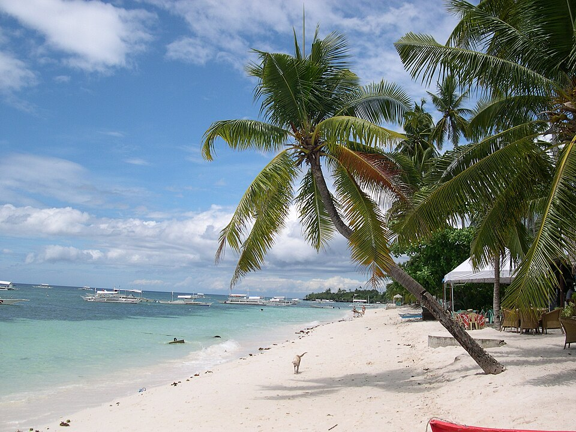
매일 · 숙소 앞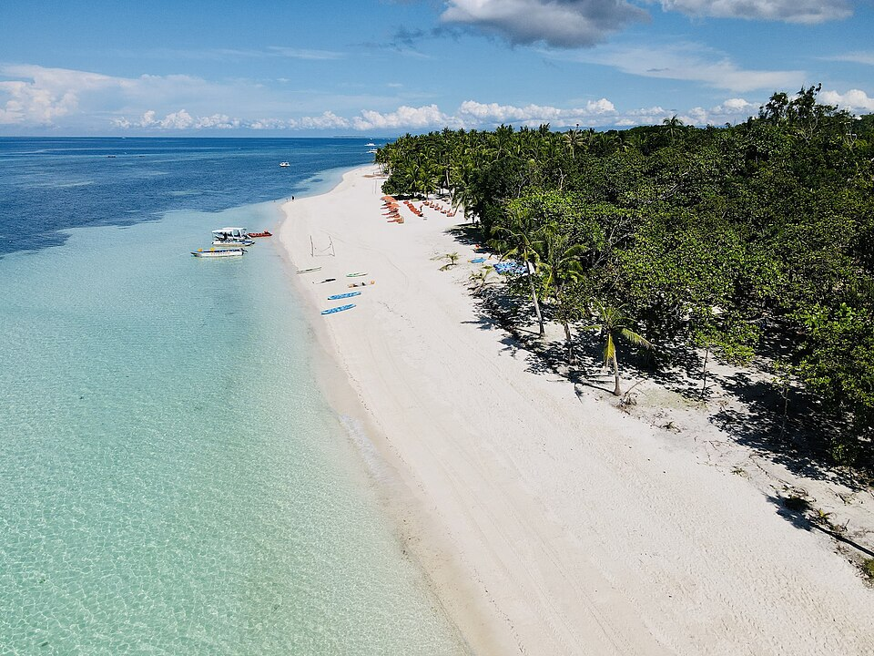
🅱️ 플랜B · 컨디션 조절용🌊 두말루안 비치
🅱️ 플랜B대체 코스팡라오에서 물빛이 제일 예쁘다는 비치. 알로나보다 한적하고 수심이 완만해 가족 물놀이에 딱이에요. 차 15분.
| 요금 | 입장료 소액(수십 페소) — 리조트 구역 따라 상이 |
|---|
🍯 보홀 비팜 (Bohol Bee Farm) — 7/23 (목) 오후
🅰️🅱️ 공통마지막 날 드라이 코스양봉장에서 시작한 유기농 농장+레스토랑+카페. 명물 꿀 아이스크림(허니콘)과 유기농 기념품 숍이 있어 마지막 날 물에 안 젖는 코스로 제격이에요. 바다 절벽 전망 좋음.
| 위치 | 다우이스 — 알로나에서 차 20분 |
|---|---|
| 추천 | 꿀 아이스크림 · 유기농 뷔페(허니 글레이즈드 치킨) · 꿀·잼 기념품 |
💆 마사지 & 스파 — 7/20 오후 · 7/23 오후
| 시세 | 로드샵 1시간 전신 400~600페소 (≈1~1.5만원) + 팁 50~100페소 |
|---|---|
| 방법 | 워크인 가능하지만 저녁 피크(19~21시)엔 대기 — 낮에 지나가며 미리 예약해두는 게 요령 |
| 7/23 필수 확인 | 출국 전 마지막 마사지는 샤워 가능한 스파로! (밤 비행 전 개운하게) · 리조트 스파는 비싸지만 시설 최고 |
🦀 알로나비치 주변 추천 맛집
| 레드크랩 (Red Crab) | 칠리크랩 명가 — 알로나 대표 씨푸드. 가족 만찬 추천 |
|---|---|
| 게리스 그릴 (Gerry's Grill) | 필리핀 현지식 체인 — 립 바비큐, 치킨 이나살 |
| 이탈리안 화덕피자 | 알로나에 이탈리아인 운영 피자집 — 딸 입맛 안전빵 |
| 샤카 보울즈 (Shaka) | 과일 스무디볼 · 건강식 브런치, 알로나 초입 |
| 한식당 | 알로나 주변 한식·퓨전한식 다수 (짬뽕, K-BBQ) — 현지식 물릴 때 |
🍍 꼭 먹어볼 것
🐷 레촌 — 필리핀 국민 통돼지구이 · 🥭 생망고 & 망고쉐이크 — 한국의 반값 이하 · 🍨 할로할로 — 필리핀식 빙수 · 🍗 치킨 이나살 — 숯불 치킨
☕ 팁
· 인기 맛집(레드크랩 등)은 저녁 피크타임에 대기 있음 — 조금 일찍(18시 전) 가는 게 좋아요
· 물은 반드시 생수 구매 (편의점 · 마트)
· 팁 문화: 마사지 50~100페소, 투어 가이드 팁은 자율
✔ 체크 상태는 이 휴대폰에 자동 저장돼요 (가족 각자 자기 폰에서 체크!)
📄 출발 전 필수 (서류)
💰 돈 · 통신
👙 물놀이 · 의류
💊 상비약 · 기타
📞 예약 · 확인
🌦️ 7월 보홀 날씨
우기(6~9월)지만 한국 장마와 달리 오후 스콜 위주. 오전엔 맑은 날이 많아 오전 투어 + 오후 휴식 패턴이 최적. 기온 25~31℃, 습도 높음. 비 온 뒤엔 살짝 쌀쌀할 수 있어요. 날짜별 실시간 예보는 🌦️ 날씨 탭에서 확인!
💵 돈 관리
· 한국에서 USD 환전 → 현지에서 페소 환전이 정석 (알로나 환전소 다수)
· 트래블월렛/트래블로그로 페소 ATM 출금도 편리
· 투어비는 보통 현금(페소) — 넉넉히 준비
· 1페소 ≈ 25원 안팎 (출발 전 환율 확인)
🚕 이동
· 팡라오공항 → 알로나비치 차로 15~20분
· 그랩(Grab)이 되지만 차량이 적음 — 새벽 도착 픽업은 사전 예약 강추
· 트라이시클(오토바이 택시)은 근거리 이동에 편리, 탑승 전 요금 흥정
🛂 입국 절차 (팡라오공항)
① 이트래블 QR 준비 (캡처!) → ② 입국심사 (리턴티켓·숙소 물어볼 수 있음) → ③ 수하물 → ④ 세관. 가족 함께 심사받으면 빠름. 이트래블은 100% 무료 — 수수료 요구하는 사이트는 전부 사기!
📴 오프라인 대비 (출발 전 5분 투자)
· 구글맵 오프라인 지도 저장 — 팡라오·보홀 지역 미리 다운로드
· 숙소·투어 픽업 포인트 핀 저장해두기
· 기사에게 보여줄 영문 주소 캡처: Alona Pawikan (Ester Lim Drive, Panglao) / Henann Resort Alona Beach (Alona Beach Rd, Panglao)
· 이 페이지의 지도 탭은 인터넷이 있어야 표시돼요 — 오프라인에선 구글맵 사용
🚨 비상 연락처
| 주필리핀 대한민국대사관 | +63-2-8856-9210 (24h 영사콜: +63-917-817-5703) |
|---|---|
| 주세부 대한민국 분관 (보홀 관할) | +63-32-231-1516 |
| 영사콜센터 (서울, 24h) | +82-2-3210-0404 |
| 필리핀 긴급전화 | 911 |
| 진에어 고객센터 | 1600-6200 |
⚠️ 안전 수칙
· 밤늦게 인적 드문 곳 다니지 않기 · 귀중품은 숙소 금고에
· 수돗물 마시지 않기, 얼음도 주의 (관광지 식당은 대체로 OK)
· 호핑 중 구명조끼 착용 · 가이드 지시 따르기
· 오토바이 렌트는 비추천 (보험 문제)